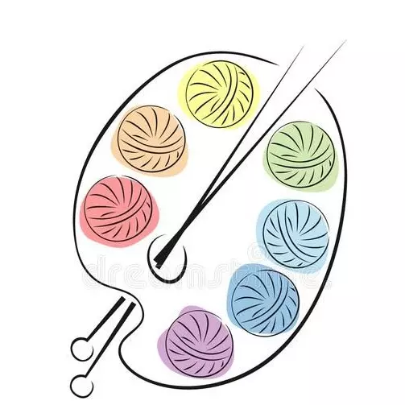

دورات تعليمية للحرف اليدوية

تجسّد الحرف اليدوية أصالة ملموسة موروثة من الآباء والأجداد، وهي سلسلة من القصص الممتدة بين الماضي والحاضر والمستقبل ولكل قطعة حرفية قيمة تراثية وفنية وجمالية، ومنفعة مرتبطة بحياتنا اليومية
أساسيات الكوروشية

حرفة يدوية إبداعية تعتمد على تشبيك الخيوط باستخدام إبرة خاصة ذات خطاف لإنشاء أنسجة وغرز متنوعة
أساسيات فن طي الورق

فن ياباني يعتمد على طي الورق لصنع مجسمات ثلاثية الأبعاد باستخدام تقنيات طي دقيقة ودون قص أو لصق
أساسيات صناعة الفخار

حرفة يدوية وفنية قديمة تعتمد على تشكيل الطين باليد أو باستخدام عجلة الفخار، ثم حرقه في أفران خاصة عند درجات حرارة عالية ليصبح صلباً ومتيناً
أساسيات نحت الخشب

حرفة فنية قديمة تعتمد على تشكيل الخشب باستخدام أدوات حادة لإزالة أجزاء منه، وتحويله إلى منحوتات مجسمة، أو نقوش بارزة وغائرة
شكرًا لاختياركم دورات تعليمية للحرف اليدوية